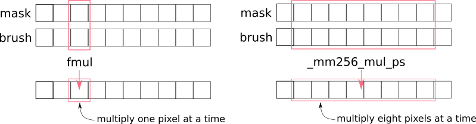
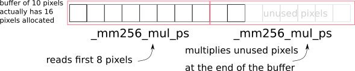
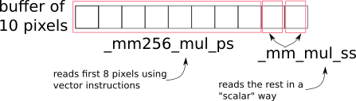
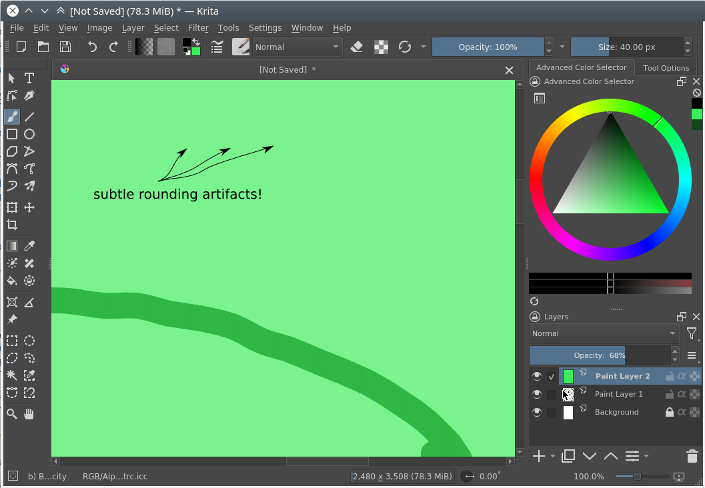

SIMD (Single instruction, multiple data) is a type of parallel data processing where a single processor instruction can process multiple values. For this purpose the CPU incorporates special computational blocks that perform the most popular arithmetic operations in parallel. For example, using AVX blocks it can multiply 8 floating-point numbers by other 8 floating-point numbers at roughly the same "speed" [1] as it would multiply a couple of numbers using a standard instruction. Such speed increase is possible because these blocks have 8 separate physical pipelines that do the multiplication in parallel.

_mm256_mul_ps is potentially 8 times faster than normal fmul instruction¶
All SSE/AVX instruction are available in C++ compiler using so-called "compiler intrinsics". A very convenient reference for them can be found in this guide from Intel. They have a bit weird naming, but it is usually enough just to understand the naming scheme. For example, multiplication intrinsic has at least 10 variants [2]:
Single-precision multiplication (float):
__m256_mm256_mul_ps(__m256a,__m256b) --- multiply 8 pairs of packed single-precision floating-point values stored in two 256-bit registers
__m128_mm_mul_ps(__m128a,__m128b) multiply 4 pairs of packed single-precision floating-point values stored in two 128-bit registers
__m128_mm_mul_ss(__m128a,__m128b) --- multiply 1(!) pair of single-precision floating-point values stored in lowest 32-bits of two 128-bit registers
Double-precision multiplication (double):
__m256d_mm256_mul_pd(__m256da,__m256db) --- multiply 4 pairs of packed double-precision floating-point values stored in two 256-bit registers
__m128d_mm_mul_pd(__m128da,__m128db) --- multiply 2 pairs of packed single-precision floating-point values stored in two 128-bit registers
__m128d_mm_mul_sd(__m128da,__m128db) --- multiply 1(!) pair of double-precision floating-point values stored in lowest 64-bits of two 128-bit registers
32-bit signed integer multiplication (qint32):
__m256i_mm256_mul_epi32(__m256ia,__m256ib) --- multiply 8 pairs of packed signed 32-bit integer values stored in two 256-bit registers
__m128i_mm_mul_epi32(__m128ia,__m128ib) --- multiply 4 pairs of packed signed 32-bit integer values stored in two 128-bit registers
32-bit unsigned integer multiplication (quint32):
__m256i_mm256_mul_epu32(__m256ia,__m256ib) --- multiply 8 pairs of packed unsigned 32-bit integer values stored in two 256-bit registers
__m128i_mm_mul_epu32(__m128ia,__m128ib) --- multiply 4 pairs of packed unsigned 32-bit integer values stored in two 128-bit registers
You don't need to remember all the intrinsics by heart. It is usually enough to remember what features are available in the CPU and then use Intel's guide linked above to find the proper intrinsic name and variant. Or use XSIMD library that hides all this boilerplate completely.
There is one thing you need to remember though, that is so-called "scalar" intrinsics. Look at functions _mm_mul_ss and _mm_mul_sd in the list above. Even though they are listed among "vector" instructions, they are not "vector". They multiply a single pair of floating point numbers stored in the lowest bits of vector registers. Such instructions will be very important for us when we start implementing scalar versions of vector algorithms a bit later. The point is, _mm_mul_ss has exactly the same precision and rounding rules as its vector counterpart (_mm_mul_ps), so we can guarantee that the two versions of the algorithm generate exactly the same result.
提示
The standard instruction for floating point multiplication is fmul from x87 FPU instruction set. All x87 FPU instructions use 80-bit precision and its rounding mode it controlled by a special rounding control register, which is usually set to to-nearest mode. But SIMD-based vector instructions use the exact precision of their operands (32 or 64 bits) and rounding is always set to to-nearest-even. It means that we should avoid mixing x87 FPU and SIMD instructions in the same algorithm, or we get inconsistent results!
警告
Beware the C standard library functions, they may use x87 FPU instructions!
As we learned before, vector instructions allow doing 8-times more computations at roughly the same time. But why are they used so rarely in the real applications? The answer is, one needs to satisfy several very severe requirements to use them. Usually, it also involves a significant amount of boiler-plate code.
Requirements for SIMD usage:
Data alignment. The data should preferably have strict alignment by 128/256-bit (for older CPUs).
Fixed-size chunks. One instruction can process exactly 4 or 8 elements at a time; one cannot process 3 or 5 elements without doing (a lot of) extra work. Hence it is difficult to write generic and reusable algorithms
Per-arch builds. At compile time we don't know what instructions set will actually be supported by the user's CPU: it might be SSE4, AVX or AVX2, we don't know; therefore we need to compile multiple versions of our algorithm for each supported CPU
These requirements mean that we cannot just pass a random data to SIMD and get a 8-times improvement. We need to do a lot of preparatory work. The rest of the this manual will explain how to satisfy these three requirements.
In the original SIMD instruction set there were two instructions available: one for aligned memory access and one for unaligned:
__m256_mm256_load_ps(floatconst*mem_addr) --- load eight 32-bit floating point values stored at mem_addr into a 256-bit register. The address at mem_addr must be 256-bit aligned, otherwise application will crash with SIGSEGV.
__m256_mm256_loadu_ps(floatconst*mem_addr) --- same as above, but mem_addr is allowed to be unaligned.
In older CPUs (before Nehalem for Intel and before TODO:unknown for AMD) aligned version of the instruction was more efficient when dealing with aligned data than the unaligned one. Hence we had to write two different versions of the code, one for aligned data and one for unaligned. In modern Intel CPUs both instructions give exactly the same performance when passed with the aligned data, so it is considered safe to use the unaligned version all the time.
警示
TODO: Is it safe to always use unaligned access on ARM?
TODO: Are we required to use element-aligned on ARM?
Please remember, that for better performance it is still recommended to make sure that all buffers are aligned to SIMD-word boundary (that is, 32 bytes for AVX and 16 bytes for SSE).
Even though we can partially ignore alignment issues with modern CPUs, we still cannot ignore the fact that the size of the chunks must be fixed.
Let's consider the following example, where we need to process 10 pixels:
_mm256_mul_ps will potentially read past the end of the allocated buffers¶
If we simply apply the vector instruction twice, we will read past the end of the allocated buffer, which will cause SIGSEGV.
In general there are three solutions for the problem:
Solution 1: always allocate a buffer of "aligned" size, that is, always round-up buffer size to the next multiple of simd-word's length

Always allocate a bit more data to make the buffer size "aligned"¶
After processing you can just ignore the processed values at the tail of the buffer.
This approach is usually the best one of the three:
you only need one (vector) version of the algorithm
it is extremely efficient (you need minimal amount of 'if's or other boilerplate)
Though this solution is not always possible. Sometimes the buffer is provided by the caller and we know nothing about it, including where it ends.
As a rule of thumb, use this approach when you have full control over the buffer allocation and deallocation. For example, when you process some temporary buffer inside some self-contained algorithm. Just allocate the aligned buffer with "aligned" size and enjoy the speed!
We use this approach in KisBrushMaskVectorApplicator<...>::processVector. This function generates a dab of an auto-brush. To do that, it allocates a fully aligned buffer with xsimd::vector_aligned_malloc<float>(simdWidth), processes the full simdWidth of it, and then just ignores the values past the requested width of the brush.
Solution 2: implement two versions of the algorithm, vector and scalar
If we have two versions of the algorithm, vector and scalar, then we can easily process the biggest part of the buffer with the vector version, and finish the tail in a one-by-one manner with the scalar one:

Process the tail with the scalar version of the algorithm¶
The downside of this approach is that we need to implement the same algorithm twice(!). It is extremely time-consuming and error-prone, but it is still usually the default choice, since it allows us to work with buffers of any alignment or size.
The two algorithms should use exactly the same operations mathematically. Even floating-point precision and rounding should be exactly the same. Otherwise the rendering will have subtle artifacts (stair-like stripes aligned to 8-pixel boundaries).
提示
As noted before, modern CPUs have two different floating-point computation blocks: x87 FPU and SSE scalar blocks. They have different precision and rounding rules. Make sure your scalar version of the algorithm does not use x87 FPU, even transitively via standard C library.
Rules of thumb:
Always write a unittest that compares the results of vector and scalar versions of the algorithm (see KisCompositionBenchmark::checkRounding.+() tests for example). There might be will be rounding errors in your algorithms.
Avoid using standard C library functions in the scalar version of your algorithm
standard C library is supposed to use x87 FPU by default
the choice of the FPU engine depends on whether -ffast-math option is passed to the compiler. Usually, -ffast-math switches library functions to the SSE engine, but that is an "implementation defined" area.
When having issues, check the assembly. The scalar version of the algorithm shouldn't use any x87 FPU instructions, only _mm_..._ss instructions from SSE set.
If your code generates stair-like artifacts aligned to 8-pixel border, check rounding again.

Make sure that all 'if' conditions are exactly the same in both, vector and scalar algorithms.
Sometimes you will be tempted to do some fast-path optimization in the scalar version of the algorithm, which are not available in the vector version. Don't do that! For example, when blending two pixels, if the source pixel is fully transparent you can just skip writing into the destination pixel. The problem is, you cannot do the same in the vector version, because the neighboring source pixels are not fully transparent. You cannot exclude a single pixel from a batch-write, so that will cause a write operation into the destination. In some cases such subtle difference will cause really hard to find bugs in rendering.
Basically, you need to always make sure that the fast-path optimization in scalar and vector algorithms are exactly the same, even if it means you have to remove some optimizations from the scalar version.
Here in Krita we use this "two versions" approach in composite ops. You can check an example in KoOptimizedCompositeCopy128.h:
the main algorithm is implemented in class CopyCompositor128. It has two methods compositeVector() and compositeOnePixelScalar().
these two functions are called from KoStreamedMath::genericComposite; this helper function handles both, alignment issues and scalar tail processing
basically, KoStreamedMath::genericComposite splits processing into 4 stages:
stage 1: calls compositeOnePixelScalar() until the dst buffer is aligned
stage 2a: in case src and dst buffers have the same alignment, calls fully aligned version of compositeVector()
stage 2b: in case src and dst buffers have different alignment, calls a special version of compositeVector() that expects dst buffer to be aligned, but src buffer not aligned
stage 3: call compositeOnePixelScalar() to process the tail
Here is an illustration of what happens in KoStreamedMath::genericComposite:
case 1: src and dst buffers have the same alignment
This approach looks extremely complicated (and it really is), but is solves all the SIMD problems on all possible CPUs, even the older ones. Therefore we use it in the most speed-critical part of Krita, in color composition.
Solution 3: copy the tail into the temporary (aligned) buffer and process it using the vector version of the algorithm
This is quite an obvious solution, but we don't use it anywhere in Krita. Copying the data into the temporary buffer and back is rather expensive, especially when the algorithm might be called for shorter chunks (e.g. for 10 pixels)
The term "cpu optimization" is usually rather confusing. It can be used in three different meanings:
Compiler's "target architecture". An architecture, for which the compiler generates code. This architecture is selected by -march and -mtune compiler switches. -march allows the compiler to issue architecture specific instructions. It also enables the corresponding intrinsics. -mtune activates automatic optimizations (and vectorizations) of the code for the specified architecture.
For example, if we specify -march=nehalem, then _mm_mul_ps intrinsic will become available (since it is a part SSE), but _mm256_mul_ps will not (it is from AVX set). If we specify -march=sandybridge, then both intrinsic will become available.
"Host architecture". An architecture of the CPU where we compile Krita on. In most of the cases this architecture doesn't matter. If the compiler supports generation of instructions for a specific instruction set at all (e.g. AVX), then it will generate them on any host CPU, even the older one.
Theoretically, you can instruct the compiler to build Krita for the "host architecture", by passing -march=native-mtune=native, but it is not recommended, since it makes the binaries not portable.
提示
Back in 2012 Krita also had an option to compile for the "host architecture". That option was removed later in favor of multiarch builds of the critical code.
"User's CPU architecture". An architecture of the CPU where the user will run Krita on.
Obviously, we cannot tell in advance what CPU the user will run Krita on. We can detect CPU capabilities only when Krita actually starts on user's device. Therefore we need to have multiple versions of the hot-path algorithms, prebuilt for each possible CPU architecture and select the optimal version on Krita startup.
Here is Krita we prebuild code for 7 most popular target instruction sets:
SSE2 --- basic 128-bit floating-point and integer arithmetic
SSSE3 --- SSE2 + several shuffle instructions
SSE4.1 --- SSSE3 + integer conversions and rounding instructions
AVX --- SSE4.1 + 256-bit floating-point (only!) arithmetic and shuffles
AVX2+FMA --- AVX + 256-bit integer arithmetic and fused-multiply-add (used a lot in compositioning code for implementation of lerp function)
The easiest approach assumes that you build the same .dll or .so library multiple times, one for each supported architecture. Then, on application launch, you load the library that fits best to the current CPU. GNU ld also has some special features that allow automatically resolve symbols on a per-architecture basis. GNU libc uses this approach.
Here in Krita we do not use this approach:
it causes too much code to be duplicated between the cloned libraries
relying on the linker features is not a portable approach
In Krita we use a template based approach. It is very explicit and provides full control over how implementations are generated and selected.
Let's consider an example of KoOptimizedPixelDataScalerU8ToU16. It is a simple class that provides optimized routines for converting pixels between uint8 and uint16 pixel formats. We use this class to increase precision of colorsmudge brush and avoid the well-known "color drift on low opacity" bug.
Firstly, we need to declare an abstract interface class that will be available to the user:
The class does nothing serious other than declares two pure virtual methods that will be used by the colorsmudge brush later.
Then we need to add a header file with the class that actually implements this interface using SSE/AVX instructions:
// file: KoOptimizedPixelDataScalerU8ToU16.htemplate<typename_impl>classKoOptimizedPixelDataScalerU8ToU16:publicKoOptimizedPixelDataScalerU8ToU16Base{public:// ...voidconvertU8ToU16(constquint8*src,intsrcRowStride,quint8*dst,intdstRowStride,intnumRows,intnumColumns)constoverride{// ... very clever implementation of U8->U16 scaling using SSE/AVX is skipped ...}voidconvertU16ToU8(constquint8*src,intsrcRowStride,quint8*dst,intdstRowStride,intnumRows,intnumColumns)constoverride{// ... very clever implementation of U16->U8 scaling using SSE/AVX is skipped ...}// ...};
Pay attention to the only template parameter of the class. The class is parameterized with "architecture", which is a simple class provided by XSIMD. We don't use this template parameter inside the class. We only need it to create multiple copies of the class without violating ODR-rule.
In the next step we need to create a FactoryImpl class. It is actually the class that will be copied multiple times.
// file: KoOptimizedPixelDataScalerU8ToU16FactoryImpl.hclassKRITAPIGMENT_EXPORTKoOptimizedPixelDataScalerU8ToU16FactoryImpl{public:/// declare a templated factory method that is parameterized/// by the CPU architecturetemplate<typename_impl>staticKoOptimizedPixelDataScalerU8ToU16Base*create(int);};
// file: KoOptimizedPixelDataScalerU8ToU16FactoryImpl.cpp/// define a full template specialization for the factory/// method for `xsimd::current_arch` architecturetemplate<>KoOptimizedPixelDataScalerU8ToU16Base*KoOptimizedPixelDataScalerU8ToU16FactoryImpl::create<xsimd::current_arch>(intchannelsPerPixel){returnnewKoOptimizedPixelDataScalerU8ToU16<xsimd::current_arch>(channelsPerPixel);}
FactoryImpl class has the only method. This method creates the scaler object and returns it via the abstract interface. Pay attention that create() method has no generic template implementation. Its only implementation is fully specialized with "magic" type xsimd::current_arch. xsimd::current_arch is a special placeholder type that points to the "desired target" architecture type, when the .cpp file is compiled for multiple architectures.
Now we need to actually compile KoOptimizedPixelDataScalerU8ToU16FactoryImpl.cpp for all targets. To do that we should use a special CMake macro:
// file: CMakeLists.txt
if(HAVE_XSIMD)
# create 6 copies of the file and compile each one
# with the corresponding compiler flags
ko_compile_for_all_implementations(__per_arch_rgb_scaler_factory_objs
KoOptimizedPixelDataScalerU8ToU16FactoryImpl.cpp)
else()
# in case XSIMD is not available, just compile the .cpp file once
# with the default compiler options (x86_64)
set(__per_arch_rgb_scaler_factory_objs KoOptimizedPixelDataScalerU8ToU16FactoryImpl.cpp)
endif()
# ...
set(kritapigment_SRCS
# ...
${__per_arch_rgb_scaler_factory_objs}
# ...
)
Now we have six explicit intantiations of KoOptimizedPixelDataScalerU8ToU16FactoryImpl class. One for each target architecture. The only thing left is to implement runtime selection of the proper instantiation. To do that, let's implement a real Factory class:
The Factory class calls a special function createOptimizedClass(), which detects the current CPU architecture and calls the proper instantiation of the FactoryImpl class to create the scaler object.
The usage of the optimized class is very simple:
/// detect the current CPU capabilities, select the best-fit `FactoryImpl`/// factory and create the scaler object that is optimized for the current CPUKoOptimizedPixelDataScalerU8ToU16Base*scaler=KoOptimizedPixelDataScalerU8ToU16Factory::createRgbaScaler();/// use the scaler as usual...scaler->convertU8ToU16(...);
提示
Why do we have two factory objects, FactoryImpl and Factory?
The main reason is that we really don't want to export a templated class from a .so/.dll library. Exporting templates is not portable, so we encapsulate all the templates behind the wall of a Factory class.
Some notes about writing efficient processing functions:
when processing pixels we should perform as few virtual calls as possible
the best way to minimize the number of virtual calls is to use "row-stride" approach, like convertU8ToU16() does
All we did before was just a preparation for the actual work. Now we need to write the actual SIMD code.
Here in Krita we use a special library XSIMD. It wraps all the compiler intrinsics into convenient C++ classes. The heart of XSIMD is xsimd::batch<type,arch> class. It behaves as if it were a simple arithmetic type, but processes multiple values at once.
Example:
/// Define convenience types to manage vector batches./// `_impl` is a template parameter that is passed via `xsimd::current_arch`/// by the per-arch build script. The size of the vector is defined/// by the actual architecture passed to it.usinguint_v=xsimd::batch<unsignedint,_impl>;usingfloat_v=xsimd::batch<float,_impl>;// load pixels into a vector registeruint_vdata_i=uint_v::load_unaligned(reinterpret_cast<constquint32*>(pixels));// extract alpha channel from the pixels and convert it to floatconstfloat_vpixelAlpha=xsimd::to_float(xsimd::bitwise_cast<int_v>(data_i>>24U));
In Krita we have a set of predefined convenience types for vector batches in KoStreamedMath:
batch type
element type
num elements (AVX2)
num elements (AVX)
num elements (SSE2)
int_v
qint32
8
8*
4
uint_v
quint32
8
8*
4
float_v
float
8
8
4
--- even though the first version of AVX doesn't support integer packs, XSIMD implements that by combining two(!) SSE2 registers into one batch. This way we can easily convert int_v into float_v back and forth.
Arithmetic operations with SIMD batches look exactly the same as if you did them with normal int or float values. Let's consider example from KoAlphaMaskApplicator::fillGrayBrushWithColor, which fills the alpha mask of the RGBA8 brush with provided color (all the inline comments assume the current architecture is AVX2):
/// a convenience batch for 8 copies of the provided brush color/// (please note that the constructor accepts a plain quint32 value,/// this value is loaded into all 8 slots of the batch)constuint_vbrushColor_i(*reinterpret_cast<constquint32*>(brushColor)&0x00FFFFFFu);/// a convenience batch of 8 values `0xFF`constuint_vredChannelMask(0xFF);for(inti=0;i<block1;i++){constintvectorPixelStride=numChannels*static_cast<int>(float_v::size);/// Load RGBA8 pixels into the brush. If `brush` pointer is aligned to 256 bits,/// the speed it a little bit better, but it is not strictly necessary, since we/// use `load_unaligned` call.constuint_vmaskPixels=uint_v::load_unaligned(reinterpret_cast<constquint32*>(brush));/// calculate the alpha channel value of each pixelconstuint_vpixelAlpha=maskPixels>>24;/// calculate the red channel value of each pixel (the brush is guaranteed to be/// grayscale here, that is, all color channels have the same value)constuint_vpixelRed=maskPixels&redChannelMask;/// calculate the final alpha value of the brushconstuint_vpixelAlpha_i=multiply(redChannelMask-pixelRed,pixelAlpha);/// combine alpha value and the provided painting colorconstuint_vdata_i=brushColor_i|(pixelAlpha_i<<24);/// store the result into the brush memory bufferdata_i.store_unaligned(reinterpret_cast<typenameuint_v::value_type*>(dst));dst+=vectorPixelStride;/// we have processed `float_v::size` pixels at once, so advance the pointer/// (for AVX2 `float_v::size` is `8`)brush+=float_v::size;}
Conditionals for vectorized values look very different from normal values. You can compare two batches, but instead of getting a single boolean you get a batch of booleans. This resulting boolean batch is called "a mask" and you can analyze it afterwards.
Let's consider an example from KoOptimizedCompositeOpAlphaDarken.h. Alpha-darken blending mode has a lot of conditionals inside, so it is a very nice example. Here is a short excerpt from it:
/// check what dst pixels have zero alpha value, the result is/// written into a mask of type `float_m`constfloat_mempty_dst_pixels_mask=dst_alpha==zeroValue;/// check if **all** dst pixels have null alphaif(!xsimd::all(empty_dst_pixels_mask)){/// it seems like there are some pixels with non-zero alpha.../// check if all pixels have non-zero alphaif(xsimd::none(empty_dst_pixels_mask)){/// if all destination pixels have non-zero alpha, just/// blend them as usualdst_c1=(src_c1-dst_c1)*src_alpha+dst_c1;dst_c2=(src_c2-dst_c2)*src_alpha+dst_c2;dst_c3=(src_c3-dst_c3)*src_alpha+dst_c3;}else{/// if at least one pixel has zero alpha, we cannot use its/// `dst_c1` value, because it is undefined; we need to/// conditionally overwrite such pixels with `src_c1`dst_c1=xsimd::select(empty_dst_pixels_mask,src_c1,(src_c1-dst_c1)*src_alpha+dst_c1);dst_c2=xsimd::select(empty_dst_pixels_mask,src_c2,(src_c2-dst_c2)*src_alpha+dst_c2);dst_c3=xsimd::select(empty_dst_pixels_mask,src_c3,(src_c3-dst_c3)*src_alpha+dst_c3);}}else{/// if **all** dst pixels have null alpha, just overwrite themdst_c1=src_c1;dst_c2=src_c2;dst_c3=src_c3;}
TODO: this chapter is not written yet. Please check implementation of FastRowProcessor<KisCurveMaskGenerator> and PixelWrapper<quint16,impl>::read for examples.
Sometimes you may want to mix XSIMD code and raw compiler intrinsics. In some cases, it may give much better performance, especially if a specific CPU instruction exists for your operation. In such cases you can just access the underlying __m128 or __m256 type of the batch via .data member.
Let's consider an example from KoOptimizedPixelDataScalerU8ToU16:
// a pack of 16 quint16 values stored in a 256-bit AVX2 registerusinguint16_avx_v=xsimd::batch<uint16_t,xsimd::avx2>;// a pack of 16 quint8 values stored in a 128-bit SSE registerusinguint8_v=xsimd::batch<uint8_t,xsimd::sse4_1>;for(inti=0;i<avx2Block;i++){/// load a pack of 16 8-bit integer values using SSE4 instructionconstuint8_vx=uint8_v::load_unaligned(srcPtr);/// convert them into 16 16-bit integers (and store in a/// wider register) using AVX2 instructionuint16_avx_vy(_mm256_cvtepu8_epi16(x));/// scale the value and add entropy to the lower bits to make/// rounding smoother using AVX2 instructionconstuint16_avx_vy_shifted=y<<8;y|=y_shifted;/// store the value using AVX2 instructiony.store_unaligned(reinterpret_cast<typenameuint16_avx_v::value_type*>(dstPtr));srcPtr+=channelsPerAvx2Block;dstPtr+=channelsPerAvx2Block;}
This approach uses a custom instruction provided by the CPU to optimize the conversion process. It gives a huge speed benefit for the color smudge brush, where this scaler is used. The main problem of this approach is that you need to implement the custom code for every platform we support, including NEON and NEON64.
The project is really nice and self-contained. You can follow the example of KoColorSpaceAbstract::m_alphaMaskApplicator that does exactly the same thing.
[easy, big] Optimize masking brush compositioning
You basically need to rewrite a single class KisMaskingBrushCompositeOp. The problem is that the class is parameterized with a dozen of composition functions. Theoretically, those functions are arithmetic, so they can be just passed with xsimd's batches, but you would probably need to define custom KoColorSpaceMathsTraits for them.
[difficult, small] Optimize gradients
The project basically needs to optimize KoCachedGradient and all the places where it is used. The project might be a bit complicated, because it needs to use gather/scatter functionality, which is a bit tricky.
[easy, small, depends on the previous three] Optimize brush textures
Basically, you needs to rewrite KisTextureOption::apply to use the code of the previous three projects to do batch-processing.
[very difficult, big] Scale predefined brushes with vectorized instructions
In this project you needs to rewrite KisQImagePyramid class to use custom scaling algorithm instead of relying on QImage. We know that QImage internally uses SSE/AVX instructions for scaling, but we are required to use RGBA8 mode for that. And our brushes are usually GrayA8 or even Alpha8, so we have huge overhead on allocations, copies and conversions (confirmed by VTune).